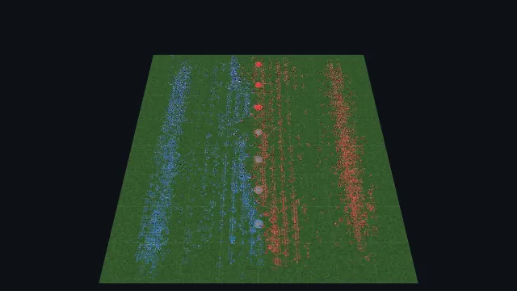
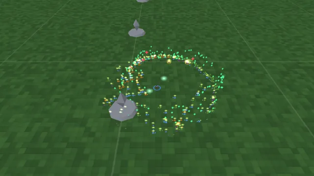
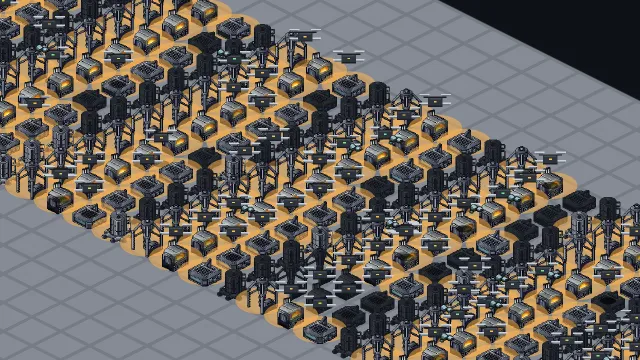
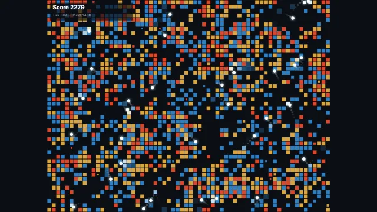

_____ _____ _____ ___ ______ _____ _ _ ___
| ___|/ __ \/ ___| / _ \ | ___ \| ___|| \ | | / _ \
| |__ | / \/\ `--. / /_\ \| |_/ /| |__ | \| |/ /_\ \
| __| | | `--. \ | _ || / | __| | . ` || _ |
| |___ | \__/\/\__/ / | | | || |\ \ | |___ | |\ || | | |
\____/ \____/\____/ \_| |_/\_| \_|\____/ \_| \_/\_| |_/
_____ _____ _____
| ___|/ __ \/ ___|
| |__ | / \/\ `--.
| __| | | `--. \
| |___ | \__/\/\__/ /
\____/ \____/\____/
___ ______ _____ _ _ ___
/ _ \ | ___ \| ___|| \ | | / _ \
/ /_\ \| |_/ /| |__ | \| |/ /_\ \
| _ || / | __| | . ` || _ |
| | | || |\ \ | |___ | |\ || | | |
\_| |_/\_| \_|\____/ \_| \_/\_| |_/
A whole-game benchmark for JavaScript ECS libraries.
Most synthetic ECS benchmarks time a single operation. That makes it hard to tell which library will actually be fast for your workload, because every workload is a little different. ECS Arena runs three simple, game-like scenarios that come a bit closer to the real thing.
Results
How many times slower than plain JavaScript each library runs each game. Shorter is faster.
| library | RTS | Survivors | Factory | |
|---|---|---|---|---|
| bitecs 0.4.0 | — | — | — | code |
| iris 0.0.14, pinned | — | — | — | code |
| koota 0.6.6 | — | — | — | code |
| plain JS no library | 1.00× | 1.00× | 1.00× | code |
Frame times
Time per tick for one run. A 60 fps game has 16.6 ms per frame (yellow line) for everything, not just the ECS. Spikes show up as stutter.
The games
RTS
Two armies fighting over a map.
relations with data · hierarchies · cascade destroy · lookup by key · many archetypes

Survivors-like
One player against endless waves of enemies.
create/destroy churn · tag add/remove · per-system fixed cost · Not/Or queries

Factory
A factory simulation: machines and the drones that move goods between them.
large worlds · sparse queries (~1.5% active) · change detection · numeric iteration

Bricks tutorial
A small game for your first entry. Balls fly in a box and break blocks. Each hit gives one point. Blocks come back in random cells, so the game never ends. It is apart from the three games above, and its results do not count toward their scores.

What the games test
| ECS feature | RTS | SurvivorsSurv | FactoryFact |
|---|---|---|---|
| Large numeric queries | + | + | |
| Create and destroy churn | + | + | + |
| Add and remove tags | + | + | + |
| Many distinct component sets | + | + | |
Query with Not or Or | + | + | + |
| Small result in a large world | + | ||
| Fixed cost of a query and a system | + | ||
| Relations with data | + | ||
| Hierarchy and transforms | + | + | |
| Cascade destroy | + | + | + |
| Change detection | + | + | + |
| Lookup by key | + | ||
| Render extraction | + | + | |
| Save and load | + | + | + |
Submit a framework
To submit a library it must pass the baseline test: pnpm verify <lib> … matches the golden trace of baseline-js on every scenario, 3 seeds each. See SPEC.md.
<lib> is your folder name under impls/. Start with the smoke set, then run the full set. works has 150k machines and takes a while.
pnpm install
pnpm verify:all # smoke set, as in CI
pnpm verify <lib> skirmish battle war # RTS
pnpm verify <lib> grove thicket swarm # Survivors
pnpm verify <lib> mill works # FactoryThen open a pull request.